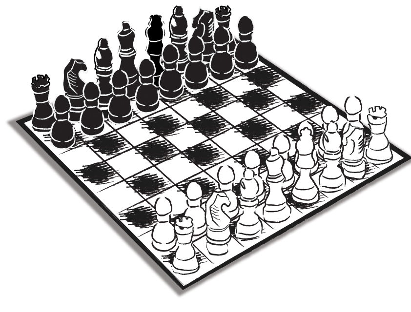

“İnan Halûk, ezeli bir şifadır aldanmak…”
Tevfik Fikret
Maslak’tan İstinye’ye doğru saptık.
Boğaz’daki küçük ancak mahir balıkçının yolunu tuttuğumuzda içimden davet yeri seçiminin tahlilini yapıyordum:
“İşte size bir ‘Bosch kültürü’ klasiği… Gösterişten uzak ama nitelikli… Son üç genel müdürünün üçü de bu konuda aynı davranış biçimi içindeydiler… Biz olsak, şu halimizle abartır, en havalı yerlerden birini seçerdik…”
Belli zaman aralıklarıyla ‘özel müşterilerimizle’ (Client) öğle yemeklerinde bir araya gelip dünya, ülke, sektör ve firmalar bağlamında ufuk turları atıyorduk. O gün de Alman beyaz eşya ve elektrikli ev aletleri devi Bosch Grubu’nun Türkiye Temsilcisi ve Genel Müdürü Hermann Butz’la keyifli sohbetlerimizden birini yapmak üzere buluşacaktık.
Bu seferki yemeğimiz, tesadüfen benim yaş günüme denk gelmişti… Üstünde fazla durmamış, sağ olsunlar, “Nasılsa şirketteki arkadaşlar her yıl olduğu gibi yine bir kutlama organize ederler,” diye düşünmenin rahatlığıyla, konuyu akşama kadar gündemimden düşürmüştüm.
Herr Butz düşürmemişti anlaşılan… Yemek davetinin o güne denk gelmesi bir tesadüf değildi. Gelirken yanında bir de armağan getirmeyi ihmal etmemişti. İlginç bir kitaptı bu…
Yazarın adını ilk kez duyuyordum: Frank Schirrmacher… Kitabın adı Payback, ‘İntikam’ ya da daha doğru bir ifade ile ‘Hesaplaşma’ anlamına geliyordu.
Kapakta başlığın hemen altında yazarın eklediği uzunca bir not vardı: “Bilgi çağında istemediğimiz şeyleri yapmaya zorlanıyoruz; düşüncemizi yeniden kendi kontrolümüz altına almayı nasıl başarabiliriz?”
Schirrmacher kitabında hayatımızı saran yüksek teknolojinin serbest irademizi nasıl tehdit edebileceğini anlattıktan sonra, ilk bölümü şu tespitle bitiriyordu:
“İnternet ortamında ve dijital teknolojilerin içinde müthiş olanaklar gizli. Sistemlerin mükemmelliğini (perfection) ancak bir koşulla (onun iradesi altına girmeden) kendi yararımıza kullanabiliriz: Kendimize biraz daha az mükemmel (perfect) olma hakkı tanıyarak… Zaaflarımızı ve eksikli olmamızı fırsata dönüştürerek, bilgisayarların hiçbir zaman ulaşamayacağı ve bu yüzden de bize karşı eksikli kalacağı üç şeyi güçlendirerek sistemlerin mükemmelliğini bu kez bizden yana devreye sokabiliriz: Yaratıcılık, Hoşgörü, Varoluş Bilinci…”
Frank Schirrmacher’in kitabının adı rahatlıkla şöyle de olabilirdi: “Bu kadar aldatılmayı hak etmiyoruz!”... Yazar o kadar önemli bir anahtar sunuyordu ki bize… Teknolojinin getirdiği nimetlerden yararlanırken onun kölesi olmamanın yolunu gösteriyordu; hem de lafı hiç dolaştırmadan:
Yaratıcılık, Hoşgörü ve Varoluş Bilinci’ne (yani dünya görüşüne) hayatında şans tanı; ileri teknoloji senin tutsağın olsun, sen onun tutsağı olma…
Bir ‘ileri teknoloji’ şirketi olan ve kendisini ‘Yaşam İçin Teknoloji’ sloganıyla konumlayan Bosch’un temel felsefesi ile kitapta yazanlar ancak bu kadar uyum içinde olabilirdi.
“İnsanların güvenini kaybetmektense para kaybetmeyi tercih ederim!” sözüyle tarihe geçmiş olan Robert Bosch’un kurduğu şirketin büyük küçük tüm hissedarları ve Robert Bosch Vakfı, teknolojiyi kârlılık ve/veya sistemin bizatihi kendisi için değil, insan için hayata katmaya kararlıydılar. Kitaptaki o tılsımlı üç kavramın üçü de tüm Bosch evrenine bir yaşam felsefesi olarak yerleştirilmiş olmalıydı.
Herr Butz bana o kitabı armağan ederken sanki, “Aldanmayın Herr Saydam!” diyordu… Ya da ben davranış dilini öyle okumuştum…
Bir anda o geniş kitle canlanıvermişti gözümde. Sürekli kulağında cep telefonu, saatlerce bilgisayarın başından kalkmayan ve her şeyin eninde sonunda teknoloji tarafından hallolacağı yanılsamasıyla yaşamaya kendisini koşullamış, adeta ‘aldanmaya’ her an hazır geniş tüketici kitlesi… Ekonominin dinamosu olarak görülse de kendisine ‘kralsın sen!’ denen milyonlar…
Tevfik Fikret boşuna vermemiş oğluna o mesajı:
“İnan Halûk, ezeli bir şifadır aldanmak…”
Yaşamın her alanına, özellikle de ‘ikna’, ‘satın alma’, ‘karar verme’ vb. süreçlerin tamamına her an sirayet edebilen ‘aldatmak’ ve ‘aldanmak’, herhalde insanlık tarihi kadar eskidir. Kapitalizmle birlikte giderek daha da ‘sofistike’ bir hal alan, iç dinamikleri konusundaki bilgilerimizin hâlâ tam anlamıyla kesinlik kazanmadığı ‘ilişki ve iletişim yönetimi’ ise ‘erdemlerle’ bu iki kavramın arasında bir yerde durur. Taraflardan birinin ağır basmasında önemli roller üstlenebilir (Bkz. spindoctor tanımı)…
Biz biraz da iletişimin uygulamalı bir bilim alanı olması gerçeğinden cesaret alıp, kendi tecrübelerimizden yola çıkarak, ‘iletişim yönetimi’ni, ilk baskısı 2005 yılında yapılmış olan Algılama Yönetimi adlı kitabımızda ele almaya çalışmıştık…
Bu kitapta da ‘ilişki yönetimini’, yine hayatın içinden yola çıkarak ‘eş ve özel müşteri bağlamında’ tartışacağız.
İletişim gibi ‘ilişki yönetimi’ de üzerine binlerce kitap yazılmış bir konudur. Belki de bu alanda kafaların bir hayli karışık olmasının nedeni biraz da budur. Herkesin zaten ‘yaşadığı’ ve bunun için de ‘bildiğini’ sandığı, bu yüzden yerli yersiz, doğru yanlış her türden kelam etmeyi kendisine hak saydığı için pek çok şey hâlâ sis bulutlarının arkasındadır…
Bu işlerin büyük ustası Philip Kotler’in bile kendi kitabında aynı kitleden kâh tüketici (Consumer), kâh müşteri (Customer), kâh özel müşteri (Client) diye söz etmesini başka türlü izah etmek zordur.
İşin ilginç yanı ise literatür taramasında tüketici ve müşteri ilişkileri konusunda sayısız kitap ve makale bulunurken, sadece ‘özel müşteri’ konusuna odaklanmış metinlerin nadiren üretilmiş olmasıdır…
İlişki ile iletişim arasındaki farkın tam olarak kavranamaması da aynı nedenlerden kaynaklanmıyor mu?
Bugün ilişki ve iletişim arasındaki farkı kuramsal olarak ortaya koyabilecek ve o kuramın çalıştığını pratikteki zengin uygulama örnekleriyle kanıtlayabilecek kaç iletişimci tanıyorsunuz?
Tabii bir de işin ulusal boyutu var. Algılamayı belirleyen ne kadar ‘ortak ruhî şekillenme’ unsuru varsa, hepsi ilişkilerin içinde misliyle çoğalarak gezinir ve her şeyi etkiler.
Bu durumu en iyi açıklayan, hatta biraz da kıskanarak söylemeliyim ki, ‘neredeyse benden de iyi açıklayan’ bir alıntıdan burada söz etmeden geçersem, hem o düşüncenin sahibine haksızlık etmiş olurum, hem de bir önceki kitabımız Algılama Yönetimi’ndeki gibi referanslarını aldığı millî ‘kayıtlara’ değinmeden işi geçiştirmiş olacağım için, doğrudan okurlara…
Ülkü Karaosmanoğlu bin yıllık dostum. Aynı binadayız. O altıncı katta, ben dokuz… Bir 29 Ekim’de maaile Bozcaada’ya gitmiştik. Fırtına vardı. Ada fırtınada bir başka güzel olur… Bir sürü fotoğraf çektik. Dalgaları ve kaleyi arkamıza alıp çektirdiğimiz bir fotoğrafı profesyonelce bastırıp Ülkü’ye yolladım. Arkasına da şu notu düştüm: “Masana ve gönlüne koyman için...”
O da ‘gönül’le ilgili’ bir alıntıyla dönmüştü bana. Alıntı, psikiyatri uzmanı Prof. Dr. Kemal Sayar ile yapılmış röportajdandı. “Batı’daki ‘ruh’ anlayışıyla Doğu’daki ‘ruh’ anlayışını karşılaştırır mısınız?” şeklindeki bir soruya Sayar şöyle yanıt vermiş:
Batı’da insanın ruhu derisinde biter. Bu ne demek? Yani benim otonom, özerk bir ruhum vardır. Oysa Doğu’da insanın ruhu derisinin bittiği yerde bitmez. Yani insanlar arası ilişki çok önemlidir. Aile çok önemlidir, sülale çok önemlidir. Hatta daha da genişletmek mümkün, insanın aşkın olanla, müteal* olanla, Allah’la kurduğu rabıta çok önemlidir kendi kimliğini tanımlarken. Yani Batılı insan çok bireyleşmiş, atomize olmuş derecede bireyleşmiş bir varlıktır. Oysa Doğulu insan daha bir sosyal matris içinde, sosyal bağlam içinde yaşayan bir insandır. Dolayısıyla bunların rahatsızlıklarının ortaya çıkması da çok değişik biçimlerde olabiliyor. Mesela Batılılar depresyon kelimesini kullanıyorlar. Depresyon çöküntü, çökme manasına gelir. Pek çok kültürde ruhî sıkıntı, ruhî ıstırap bu kelimeyle ifade edilmemektedir. Bizim toplumumuzda, benim Çubuk yöresinde duyduğum enfes bir şey vardı, ‘gönül yorgunluğu’ diyorlardı depresyon benzeri haller için. Bunun Batı dillerinde bir karşılığının olması çok zor. Bakın ‘gönül yorgunluğu’ ifadesinde neler var. Bir kere ‘gönül’ diye bir kelime var… (Röportaj: Mehmet Emre Ayhan, Kültür Ocağı Vakfı-Rengâhenk Dergisi, 21.04.2008)
Batı insanı ile bizim insanımızın toplum içindeki hareketini belirleyen, kendine özgü varoluş kriterlerinin oluşmasını sağlayan unsurlar arasında, işin sadece iletişim boyutunda temel farklılıklar yoktu, ilişki boyutunda da çok önemli ve belirleyici bir duruş, bir anlayış farkı vardı.
Sadece bu gerçeklik bile ‘ilişki yönetimi’ konusunda temel yaklaşımların, ne yazık ki bugüne kadar genelde yapıldığı gibi Batı’dan kopyalanıp yapıştırılmasının ne kadar tehlikeli olabileceğini göstermeye yetiyordu.
Peki, önemli miydi, belki her gün onlarca kez kullandığımız ‘ilişki’ ile ‘iletişim’ kavramları arasındaki farkı algılamak ya da ‘müşteri ilişkileri yönetimi’ ile ‘özel müşteri ilişkileri yönetimi’ arasındaki uygulamada olması gereken değişik yaklaşım tarzlarını bilip ona göre yol almak?...
Bu gibi durumlarda karşımıza üç yol çıkar:
Bir: Ya o ünlü fıkrada horoz kardeşin yaptığı gibi yaşamayı sürdürürüz. Hani horoza sormuşlar, “Tavuk mu yumurtadan çıkar, yumurta mı tavuktan?” O da cevap vermiş: “Vallahi bu soru beni hiç ilgilendirmez, ben işimi yapar yoluma devam ederim...”
İki: Ya hafif ukala bir horoz tavrı takınıp “Böyle abuk soruları yanıtlamıyorum kardeşim. Bunlar insanı açmaza sürükleyen münafıklık ürünü karşıtlıklardır…” falan diyeceksiniz. Biraz daha cinseniz, yine aynı alan içinde kalacak ve “Tabii ki yumurta tavuktan çıkar kardeşim” diye amiyane tabirle ‘sazanlık’ yaparak hükmünüzü vereceksiniz: “Çünkü yumurtadan tavuk değil, civciv çıkar...” Ya bu grup içinde bulunan pek çokları gibi, “Adamlar yılların tecrübesiyle her şeyi bulmuşlar kardeşim, sen Amerika’yı yeniden mi keşfedeceksin?” deyip, onca yıldır yapıldığı gibi Tylenol krizi ile Exxon Valdes krizini anlatıp kitabı/makaleyi bitireceksiniz. Bravo, diyecekler size… “Müthiş bir tespit!” şeklinde övgüler alacaksınız… Ama sonuç, elde var sıfır olacak.
Üç: Ya da sırtınızı ‘Yaratıcılık, Hoşgörü ve Varoluş Bilinci’ne (yani dünya görüşüne)’ yaslayacak, işe derinlik kazanma arzunuzu da katarak, “Benzetmeler genellikle yanlıştır, sadece onlara ihtiyaç duymayanların işine yarar; irfana dönüşmez, hikmetin yolunu açmaz!” diyecek, kendi içselleştirme yolculuğunuzu kendiniz tasarlayacaksınız.
Karar sizin…
Üçüncü yolu seçmeniz halinde bir istisna yapmanızın gerekebileceğini unutmayın: Elinizdeki kitap, eşle ve müşteriyle ilişkinin birbiriyle olan çarpıcı benzerliğinden yola çıkılarak kaleme alınmıştır. Oysa bir paragraf önce de “Benzetmeler genellikle yanlıştır” demişiz… İnsanın ayağının altından halının çekildiği hissine kapılması işten bile değildir. Ancak hayatın bizzat kendisi bu ve benzeri çelişkilerle doludur.
O nedenle yapmanız gereken şey “Kurallar, istisnalarıyla ayakta durur” sözüne sırtınızı yaslayıp ‘yaşamı içselleştirme yolculuğunuzu tasarlamak’ üzere kitabın sayfalarını çevirmeye başlamaktır.
İyi yolculuklar efendim…